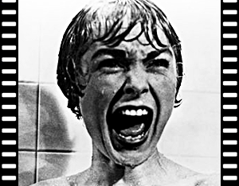
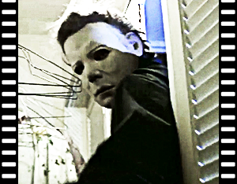

Alguns dos mais famosos filmes de terror:
|  | Título no Brasil: Psicose |
Ano de produção: 1960 |
Diretor: Alfred Hitchcock |
Título Original: Psycho |
País de Origem: Estados Unidos |
Trailer: YOUTUBE |
SinopseEm Phoenix, Arizona, Marion Crane (Anne Heche), secretária de uma imobiliária, rouba 40 mil dólares do seu patrão. Com este dinheiro, ela sonha recomeçar sua vida com o homem que ama e, quando ruma ao seu encontro, acaba se perdendo e decide pernoitar em um velho motel administrado por Norman Bates (Vince Vaughn). |
SinopseA radiação provocada pela queda de um satélite faz com que os mortos saiam de suas covas como zumbis comedores de gente, fazendo com que um grupo de pessoas refugiados em uma casa tenham que lutar pela sobrevivência contra uma horda sedenta de carne e sangue |
Título no Brasil: A Noite dos Mortos-Vivos |
Ano de produção: 1968 |
Diretor: George A. Romero |
Título Original: The Night of the Living Dead |
País de Origem: Estados Unidos |
Trailer: YOUTUBE |
 |
 |
Título no Brasil: O Bebê de Rosemary |
Ano de produção: 1968 |
Diretor: Roman Polanski |
Título Original: Rosemary's Baby |
País de Origem: Estados Unidos |
Trailer: YOUTUBE |
SinopseUm jovem casal, Rosemary (Mia Farrow) e Guy Woodhouse (John Cassavetes), se muda para um prédio habitado por estranhas pessoas, onde coisas bizarras acontecem. Quando ela engravida, passa a ter estranhas alucinações e vê o seu marido se envolver com os vizinhos, uma seita de bruxas que quer que ela dê luz ao Filho das Trevas. |
SinopseEm Georgetown, Washington, uma atriz vai gradativamente tomando consciência que a sua filha de doze anos está tendo um comportamento completamente assustador. Deste modo, ela pede ajuda a um padre, que também é um psiquiatra, e este chega a conclusão de que a garota está possuída pelo demônio. Ele solicita então a ajuda de um segundo sacerdote, especialista em exorcismo, para tentar livrar a menina desta terrível possessão. |
Título no Brasil: O Exorcista |
Ano de produção: 1973 |
Diretor: William Friedkin |
Título Original: The Exorcist |
País de Origem: Estados Unidos |
Trailer: YOUTUBE |
 |
 |
Título no Brasil: O Massacre da Serra Elétrica |
Ano de produção: 1974 |
Diretor: Tobe Hooper |
Título Original: The Texas Chainsaw Massacre |
País de Origem: Estados Unidos |
Trailer: YOUTUBE |
SinopseEm 1973, a polícia texana deu como encerrado o caso de um terrível massacre de 33 pessoas provocado por um homem que usava uma máscara feita de pele humana. Nos anos que se seguiram os policiais foram acusados de fazer uma péssima investigação e de terem matado o cara errado. Só que dessa vez, o único sobrevivente do massacre vai contar em detalhes o que realmente aconteceu na deserta estrada do Texas, quando ele e mais 4 amigos estavam indo visitar o seu avô. |
SinopseMichael Myers (Tony Moran) é um psicopata que vive em uma instituição há 15 anos, desde quando matou sua própria irmã. Porém, ele consegue fugir de seu cativeiro e retorna à sua cidade natal para continuar seus crimes na localidade que, aterrorizada, ainda se lembra dele. |
Título no Brasil: A Noite do Terror |
Ano de produção: 1978 |
Diretor: John Carpenter |
Título Original: Halloween |
País de Origem: Estados Unidos |
Trailer: YOUTUBE |
 |
 |
Título no Brasil: O Iluminado |
Ano de produção: 1980 |
Diretor: Stanley Kubrick |
Título Original: The Shining |
País de Origem: Reino Unido |
Trailer: YOUTUBE |
SinopseDurante o inverno, um homem (Jack Nicholson) contratado para ficar como vigia em um hotel no Colorado e vai para lá com a mulher (Shelley Duvall) e seu filho (Danny Lloyd). Porém, o contínuo isolamento começa a lhe causar problemas mentais sérios e ele vai se tornado cada vez mais agressivo e perigoso, ao mesmo tempo que seu filho passa a ter visões de acontecimentos ocorridos no passado, que também foram causados pelo isolamento excessivo. |
SinopseEm 1958, um casal de adolescentes foge de um acampamento para passar uma noite romântica juntos, mas os dois são perseguidos por um assassino e mortos a facadas. Em 1979, os dirigentes do acampamento Crystal Lake decidem reabrir o local, apesar do trauma que ainda marca a cidade. Quando novos monitores são contratados, eles começam a desaparecer mais uma vez, assassinados brutalmente, um por um. |
Título no Brasil: Sexta-Feira 13 |
Ano de produção: 1980 |
Diretor: Sean S. Cunningham |
Título Original: Friday the 13th |
País de Origem: Estados Unidos |
Trailer: YOUTUBE |
 |
 |
Título no Brasil: Uma Noite Alucinante - A Morte do Demônio |
Ano de produção: 1981 |
Diretor: Sam Raimi |
Título Original: The Evil Dead |
País de Origem: Estados Unidos |
Trailer: YOUTUBE |
SinopseCinco estudantes da Universidade de Michigan decidem passar um final de semana em uma casa isolada. Lá eles encontram o livro dos mortos, um documento que data da época da Babilônia e que está relacionado ao livro dos mortos egípcio. Enquanto vasculham a casa os amigos gravam em fita alguns encantamentos demoníacos, escritos no livro. A partir de então eles são possuídos por espiritos, um a um. O primeiro alvo é Cheryl (Ellen Sandweiss), brutalmente estuprada pelas forças do mal. Ash (Bruce Campbell), seu irmão, resolve levá-la a uma cidade próxima, mas descobre que a única ponte que leva ao local está destruída. Logo a transformação de Cheryl em demônio é concluída, resultando em seu ataque aos amigos. |
SinopseUm grupo de adolescentes tem pesadelos horríveis, onde são atacados por um homem deformado com garras de aço. Ele apenas aparece durante o sono e, para escapar, é preciso acordar. Os crimes vão ocorrendo seguidamente, até que se descobre que o ser misterioso é na verdade Freddy Krueger (Robert Englund), um homem que molestou crianças na rua Elm e que foi queimado vivo pela vizinhança. Agora Krueger pode retornar para se vingar daqueles que o mataram, através do sono. |
Título no Brasil: A Hora do Pesadelo |
Ano de produção: 1984 |
Diretor: Wes Craven |
Título Original: A Nightmare on Elm Street |
País de Origem: Estados Unidos |
Trailer: YOUTUBE |
 |
 |
Título no Brasil: Brinquedo Assassino |
Ano de produção: 1988 |
Diretor: Tom Holland |
Título Original: Child's Play |
País de Origem: Estados Unidos |
Trailer: YOUTUBE |
SinopseUm serial killer é morto em um tiroteio com a polícia, mas antes de morrer utiliza seus conhecimentos de vodu e transfere sua alma para um boneco. Um menino ganha exatamente este brinquedo como presente da sua mãe. O menino tenta alertar que o boneco está vivo, mas sua mãe e um detetive da polícia só acreditam nele após o brinquedo ter feito várias vítimas. Mas o boneco está realmente interessado é no garoto, pois só no corpo dele poderá continuar vivo, e isto coloca a criança em grande perigo. |
SinopseSidney Prescott (Neve Campbell) começa a desconfiar que a morte de dois estudantes está relacionada com o falecimento da sua mãe, há cerca de um ano. Enquanto isso, os jovens da pacata cidadezinha começam a receber ligações de um maníaco que faz perguntas sobre filmes de horror. Quem erra, morre. As perguntas seguem uma lógica que será desvendada numa grande festa escolar. |
Título no Brasil: Pânico |
Ano de produção: 1996 |
Diretor: Wes Craven |
Título Original: Scream |
País de Origem: Estados Unidos |
Trailer: YOUTUBE |
 |